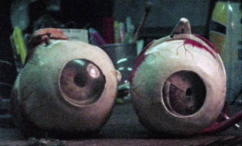

Das Gestell

Philip Widmann
|
30 min – Super 8 auf HD – Japanisch, Deutsch B+S+T: Philip Widmann – Mit Naoki Ishida, Fumiake Onodera Website Philip Widmann
|
samstag 13 okt 18.30 werkstattkino
Ein japanischer Philosoph schreibt einen Brief an einen berühmten deutschen Kollegen. Er bittet die Deutschen, den Japanern zu empfehlen, mit der Durchdringung des modernen Lebens durch Technologie umzugehen. Mehr als 50 Jahre später werden dieselben Themen unter Akademikern und angehenden Ingenieuren diskutiert. Wobei der Rückgriff auf biographische Trivialitäten, mythologische Geschichten und das Erzählen von Träumen ihnen nicht dabei hilft, diese Probleme klarer zu sehen. In den körnigen Bildern des Films erscheinen Landschaften unsicherer Zeit, gelegentlich von Wasser und eine Kakophonie von Blechbläsern überschwemmt. Das Unkontrollierbare findet seinen Weg in eine Welt, die Risiken zu minimieren sucht und damit neue Gefahren schafft.
Philip Widmann geb. 1980 in West-Berlin. Studium der Ethnologie und Visuellen Kommunikation in Hamburg. Mitglied von LaborBerlin. |
| Films Destination Finale 2008 (4. UX) – Die Frau des Fotografen 2011 – Szenario 2014 (9. UX) – Fictitious Force 2015 (10. UX) – Ein Haus in Ninh Hoa 2016 (11. UX) |